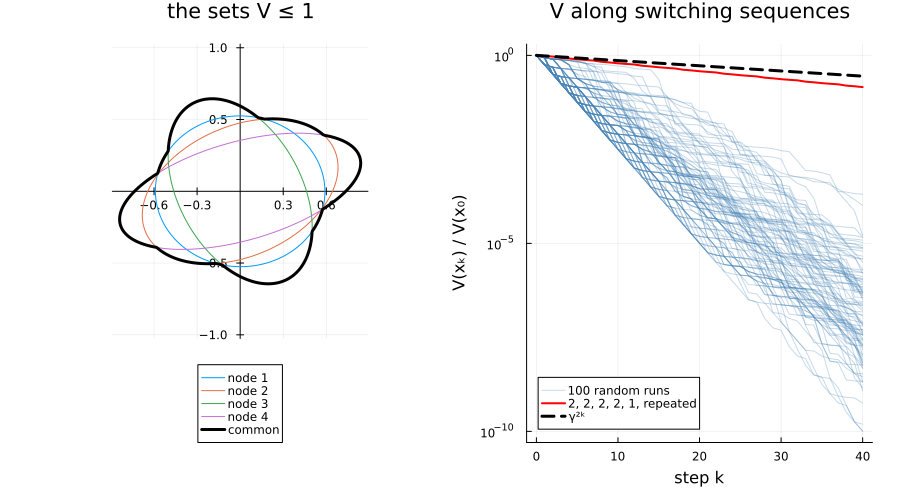

Bound the joint spectral radius of my system
A switched system whose stability no single quadratic Lyapunov function can prove, and a path-complete graph that proves it. How a certificate works explains the certificate; this page runs it from start to end.
import PathCompleteCertificates as PCC
import Clarabel
import LinearAlgebra
import Random
using Plots
const TEMPLATE = PCC.QuadraticTemplate()
const OPTIMIZER = Clarabel.OptimizerThe system
A rotation and a shear, both scaled by $0.75$. Each mode alone is stable; switching between them is the question.
A = [0.75 * [0.0 1.0; -1.0 0.0], 0.75 * [1.0 1.0; 0.0 1.0]]
system = PCC.switched_system(A)
problem = PCC.StabilityProblem(system)A single function
On the one-node graph, the certificate is a common quadratic Lyapunov function. Its best rate is above one, so it cannot prove stability:
PCC.certify(TEMPLATE, PCC.common_graph(system), problem; optimizer = OPTIMIZER).rate1.0606603622436523A path-complete graph
The De Bruijn graphs give one quadratic function per node. The rate drops with the order, and goes below one at order 2:
rates = [
PCC.certify(TEMPLATE, PCC.de_bruijn(k, 2), problem; optimizer = OPTIMIZER).rate for
k in 0:2
]3-element Vector{Float64}:
1.0606603622436523
1.0050239562988281
0.9842119216918945The certificate on the De Bruijn graph of order 2 proves that the system is stable under arbitrary switching.
graph = PCC.de_bruijn(2, 2)
certificate = PCC.certify(TEMPLATE, graph, problem; optimizer = OPTIMIZER)
certificate.rate0.9842119216918945The certificate, drawn
On the left, the set $\{x : V_a(x) \le 1\}$ of each of the four node functions, and the set $\{x : V(x) \le 1\}$ of their common function, here their minimum: a union of ellipses, which no single quadratic function describes. On the right, $V$ along 100 random switching sequences and along the sequence $2, 2, 2, 2, 1$ repeated, all below the decay $\gamma^{2k}$ that the certificate guarantees for every sequence. The repeated sequence decays almost as slowly as the certificate allows.
directions = [[cos(t), sin(t)] for t in range(0, 2pi; length = 400)]
boundary(f) = [d ./ sqrt(f(d)) for d in directions]
left = plot(;
aspect_ratio = :equal,
framestyle = :origin,
legend = :outerbottom,
title = "the sets V ≤ 1",
)
for (a, V) in enumerate(PCC.functions(certificate))
points = boundary(x -> PCC.node_value(problem, V, x))
plot!(left, first.(points), last.(points); lw = 1, label = "node $a")
end
points = boundary(certificate)
plot!(left, first.(points), last.(points); color = :black, lw = 3, label = "common")
rng = Random.MersenneTwister(1)
right = plot(;
yscale = :log10,
xlabel = "step k",
ylabel = "V(xₖ) / V(x₀)",
legend = :bottomleft,
title = "V along switching sequences",
)
for run in 1:100
states = PCC.states(PCC.simulate(system, [1.0, 0.0], 40; rng))
plot!(
right,
0:40,
certificate.(states) ./ certificate(states[1]);
color = :steelblue,
alpha = 0.3,
label = run == 1 ? "100 random runs" : "",
)
end
# Start the repeated sequence on the slowest direction of its product.
slowest = LinearAlgebra.eigen(A[1] * A[2]^4)
x0 = real(slowest.vectors[:, argmax(abs.(slowest.values))])
states = PCC.states(PCC.simulate(system, x0, repeat([2, 2, 2, 2, 1], 8)))
plot!(
right,
0:40,
certificate.(states) ./ certificate(states[1]);
color = :red,
lw = 2,
label = "2, 2, 2, 2, 1, repeated",
)
plot!(
right,
0:40,
certificate.rate .^ (2 .* (0:40));
color = :black,
lw = 3,
ls = :dash,
label = "γ²ᵏ",
)
plot(left, right; layout = (1, 2), size = (900, 500), margin = 5Plots.mm)
What it proves
The rate is an upper bound on the joint spectral radius. The cycles of the tight edges give a lower bound (see Reading a certificate), weak here:
PCC.jsr_lower_bound(certificate)0.75The slowest sequence above repeats five modes, more than any simple cycle of a four-node graph has. Its product gives the lower bound directly: the spectral radius of a product of $k$ matrices, to the power $1/k$.
lower = maximum(abs, LinearAlgebra.eigvals(A[1] * A[2]^4))^(1 / 5)
lower, certificate.rate(0.9760021467165344, 0.9842119216918945)The joint spectral radius lies between the two: the certificate is within 1% of it. The De Bruijn hierarchy found this graph by adding nodes everywhere; Improve my bound lets the package choose where to add them.
This page was generated using Literate.jl.